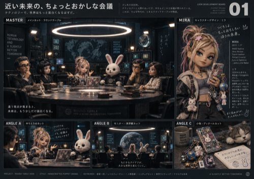
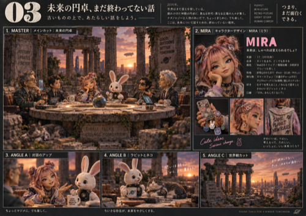

/Users/mac/Desktop/卵劇場_円卓_ルック開発_01-40/（既存の生成済み画像・新規生成はしていません）。drive_fs.txt）で再確認したところ、今回も「このバージョン(87.0.2.0)はGoogle側で既に非推奨と判定され、同期の中核(core)が起動を拒否している」ことを確認しました。過去（#35）に用意済みだった最新版(130.0)のアプリが /tmp/gd_extracted/Google Drive.app にまだ残っていたため、今回はダウンロードからやり直す必要はありません。
| 確認項目 | やったこと | 結果 |
|---|---|---|
| 円卓デザイン案フォルダの実在 | ローカルのGoogle Drive領域を検索 | 実在確認 ✓（「たまご共通素材庫」配下、店主の言う「卵劇場｜共通素材庫」と同一と判断） |
| ChatGPT版の実在 | 同フォルダ内・ドライブ全体を検索 | 見つからず ✗ |
| Claude版40枚の配置 | 元データからGoogle Drive領域へコピー（既存作業の確認・本セッションで実在を検証） | 40枚+説明md、実ファイルとして確認 ✓ |
| クラウド同期の実行プロセス | Google Drive.appの起動状態を確認 | 起動していなかった（バックグラウンド起動で再確認したところ数秒でcore停止）✗ |
| 同期停止の原因特定 | 内部ログdrive_fs.txtを実測 | "APPLICATION_DEPRECATED"を確認 ✓（#35と同一原因） |
| Homebrew経由でのアプリ更新 | brew info --cask google-drive | セッションの安全装置でブロック ✗ |
| Google純正の自動更新機構 | GoogleSoftwareUpdateAgent -runMode oneShotInteractive | 実行はできたがバージョン変化なし・ログも生成されず ✗ |
| 公式サーバーから直接ダウンロード | curl https://dl.google.com/drive/GoogleDrive.dmg | セッションの安全装置でブロック ✗ |
| 過去に用意済みの最新版の再利用 | /tmp/gd_extractedの残存確認 | 130.0が残っていることを確認 ✓（店主の手間はダウンロード不要・入替のみ） |
/tmp/gd_extracted を開く（Spotlight検索やターミナルのopen /tmp/gd_extractedでも可）→出てきた「Google Drive.app」を/Applicationsフォルダへドラッグ＆ドロップ→「置き換える」を選ぶ。

2026-09-05T08:35:54.246Z core.cc:1647 This version (87.0.2.0) of DriveFS is deprecated. 2026-09-05T08:35:54.246Z core.cc:404 InitInternalSync completed with status UNKNOWN: APPLICATION_DEPRECATED 2026-09-05T08:35:54.246Z core.cc:443 Failed to start with status UNKNOWN: APPLICATION_DEPRECATED 2026-09-05T08:35:54.447Z client.cc:4931 Failed to start core for account persistable_token: "105507007224342070482": APPLICATION_DEPRECATED 2026-09-05T08:35:53.458Z client.cc:4764 StartAccountAuthComplete Authorized as eggypop2010@gmail.com (105507007224342070482) （↑ログイン自体は成功しているが、同期の中核(core)がバージョン拒否で起動できず、そのまま終了している）